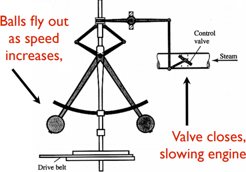
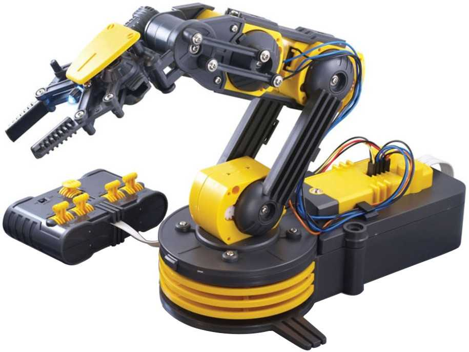
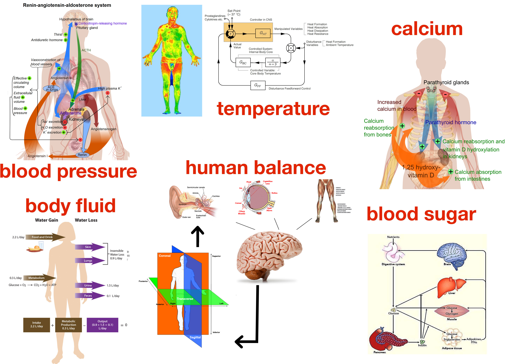
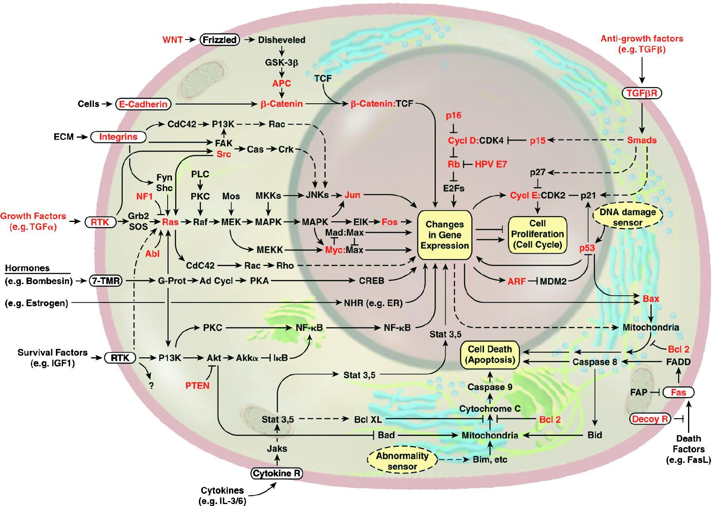
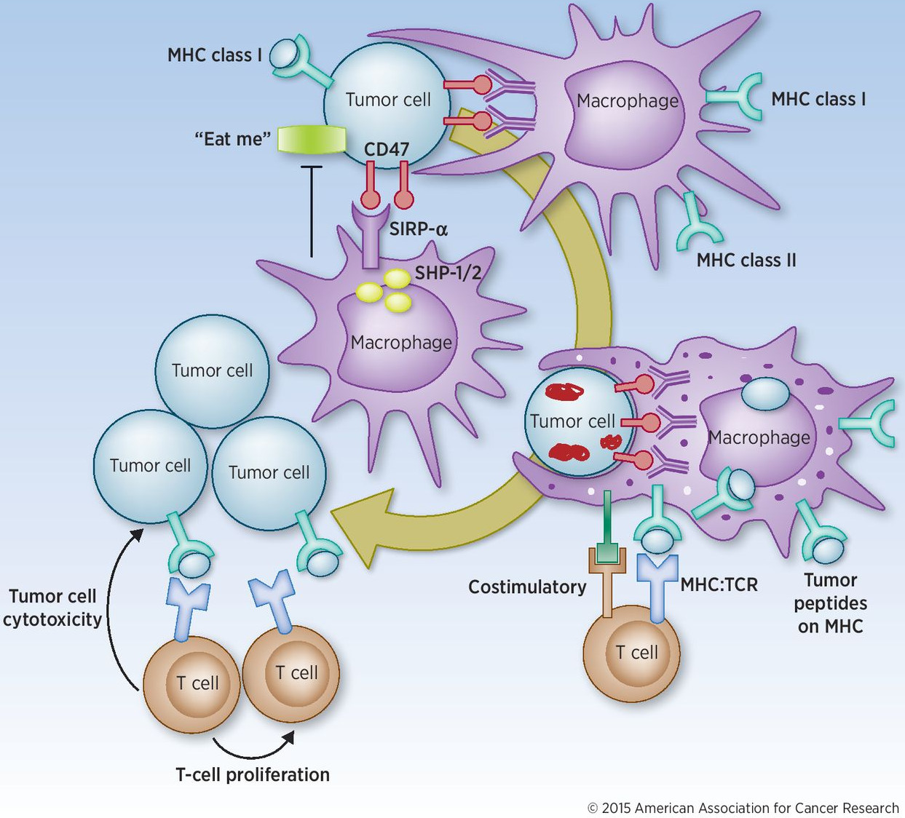
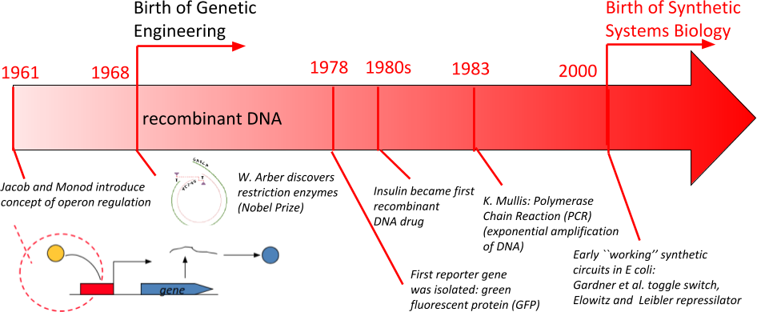

Control theory deals with the basic principles underlying the analysis and design of control systems. To “control” an object means to influence its behavior so as to achieve a desired goal. In order to implement this influence, engineers build devices that incorporate various mathematical techniques. A key enabler of the English Industrial Revolution was Watt’s steam engine fly-ball or centrifugal governor, which built upon Huygens’ windmill controller.

Control systems and feedback play a central role in aerospace control, manufacturing, robotics, active damping, climate control of buildings, chemical process control, electrical power systems, consumer products, active suspensions, automatic braking, engine timing, and self-driving in cars, mobile communications, power control, noise cancellation in headphones, and many other areas of engineering.

Control and feedback are also ubiquitous in physiological systems underlying the homeostatic mechanisms that finely tune internal variables (such as temperature, pressure, sugar levels, and body fluid balance), as well as the delicate interplay between infections, tumors, and the immune system.

The study of control systems and their interaction with the object being controlled is the subject of control theory. While on the one hand one wants to understand the fundamental limitations that mathematics imposes on what is achievable, irrespective of the precise technology being used, it is also true that technology may well influence the type of question to be asked as well as the choice of mathematical model. Control Theory theory focuses on the basic theoretical principles underlying the analysis of feedback and the design of control systems including questions of information processing, signaling, robustness, feedback, computation, and dynamical properties. Control theory differs from the more classical study of dynamical systems because of its emphasis on inputs (or controls) and outputs (or measurements).
Roughly speaking, there are two main lines of work in control theory. The first of these, known as “open-loop” control, aims to plan a sequence of control actions in order to achieve an objective, often while simultaneously minimizing a “cost” (or maximizing a “benefit”) criterion. Examples are the use use of physical principles and engineering specifications in order to calculate that trajectory of a spacecraft which achieves a transfer from one orbit to another, perhaps minimizing total travel time or fuel consumption, or the scheduling and dosing of chemotherapy with the objective of eliminating a tumor while minimizing toxicity to the patient. The techniques used in open-loop control are closely related to the classical calculus of variations and to other areas of optimization theory; the end result is typically a preprogrammed plan of action (treatment, flight, driving directions). The second broad line of work is “feedback” control, in which rules are designed so as to correct for deviations from a desired behavior. Examples include the control systems used during actual space flight in order to compensate for errors from the precomputed trajectory, adjustments in therapy to account for patient responses, or GPS-based navigation systems that use location and road conditions to adjust a preplanned route. Feedback helps mitigate the effects of uncertainty in the designer’s model of the object being controlled as well as the environment in which it operates, and in that sense provides “robustness” of control designs. Mathematically, stability theory, dynamical systems, and for linear systems tools from complex analysis and linear algebra, have had a strong influence on this approach.
Now that a map of the human genome is available, one of the most important and formidable challenges is to understand, quantify, and conceptualize the information processing, regulatory, and dynamic behavior of complex molecular reaction networks composed of interacting genes, coding and non-coding mRNA’s, proteins, small molecules, metabolites, and other cellular players.
Control and feedback are also key organizing principles in systems biology at a molecular level. This is a conceptual diagram (from Hanahan and Weinberg, Cell, 2000) of some of the central signaling and gene regulatory pathways in cells, whose disruption lead to the formation of malignant tumors (shown in red are genes known to be functionally altered in cancer cells):

When thinking of a diagram like this, one may ask: What information processing is being performed? What do the various signaling pathways do? Why are there feedback and feedforward loops? What dynamical properties emerge, such as stability or oscillations? What interventions can be used in order to change undesirable behaviors? A natural way to approach such problems is afforded by the formalism of control theory of open systems subject to chemical and physical inputs from the environment, internal states which describe chemical concentrations, and observables.
In fact, completely analogous –and often mathematically equivalent– questions arise at all scales of biological organization, from cell interactions with other cells and with their environment, to tissues, to interactions among immune system subpopulations, or immune system components with tumors and infectious agents, to organisms, to embryonic development, and even to full ecosystems. The mathematics of feedback systems is a universal language, and conceptually similar ideas underlie the modeling of predator-prey systems in ecology or in immune/tumor interactions.

Dynamics may be studied through systems of ODEs, in which each distinct “species” is, depending on the problem of interest, an organism, tissue, cell type, bacterium, virus, or biomolecule, and the rate of change of each component is a function of population sizes, interactions among species, and external factors; of course, for many problems it is more appropriate to employ PDEs or agent based models, and to include stochastic effects. In response, the field of “systems biology” has emerged as an academic domain for education and research, tying together and subsuming many aspects of physiology, classical biomathematics, quantitative pharmacology, and biophysics. The ultimate (and arguably very ambitious) goal of the field to bring unity to the study of feedback control loops and signal processing mechanisms underlying life, in the process developing novel and powerful mathematical theory and tools to analyze systems-level biological behavior. On the other hand, given the central role of feedback and signaling mechanisms in the control of gene expression, protein synthesis, cell division and differentiation, development, immune responses, and other life-critical processes, the dysregulation of these mechanisms is a factor in many human medical disorders. Thus, it is not unrealistic to expect that the mathematics of systems biology will eventually also play an important role in clinical decision-making, complementing statistical and computational tools. The emerging field sometimes referred to as “quantitative biomedicine” focuses on translational aspects of systems biology to therapeutic applications.
The advent of the field of (molecular, systems) “synthetic biology” at the turn of the 21st Century was motivated by two distinct, but mutually reinforcing, goals.

A first goal is to design novel –or re-engineer existing– molecular biological systems, extending or modifying the behavior of organisms, and to control them to perform new tasks. Through the de novo construction of simple elements and circuits, the field aims to develop a systematic approach to obtaining new cell behaviors in a predictable and reliable fashion. Applications include targeted drug delivery, immunotherapy (e.g., redesign of cytotoxic T cells to fight tumors), renewable energy (e.g., bio-fuels through ethanol-producing bacteria), re-engineering bacterial metabolism for waste recycling, bio-sensing (e.g., detecting environmental pathogens or toxins), tissue homeostasis (e.g., designing self-differentiating β cells in type 1 diabetes treatments), and computing applications (e.g., molecular computing).
A second, and no less important, goal is to improve the quantitative and qualitative understanding of basic natural phenomena. Experimental validation in theoretical biology is hampered by the practical difficulties that one faces when attempting to test the validity of models, due to interlocking regulatory loops in tightly controlled naturally occurring cellular systems. A very useful approach to the testing of (mathematical) models of a biological system is to design and construct synthetic versions of the hypothesized system (quoting Richard Feymann out of context, “what I cannot create, I cannot understand”). Discrepancies between expected behavior and observed behavior serve to highlight either research issues that need more studying, or knowledge gaps and inaccurate assumptions in models. Synthetic, as opposed to naturally occurring, networks have the advantage that they can be designed specifically to test hypotheses, thus affording a “clean playground” in which to test models. Systems can be built with exactly the components that are believed to be relevant to a given biological signal processing and/or control function. In this fashion, the combinatorial effects of multiple feedforward and feedback loops, or the steps involved in complex cellular responses to stimuli, can be deconstructed and analyzed. The basic knowledge gained from synthetic constructs thus helps advance our understanding of natural complex systems.